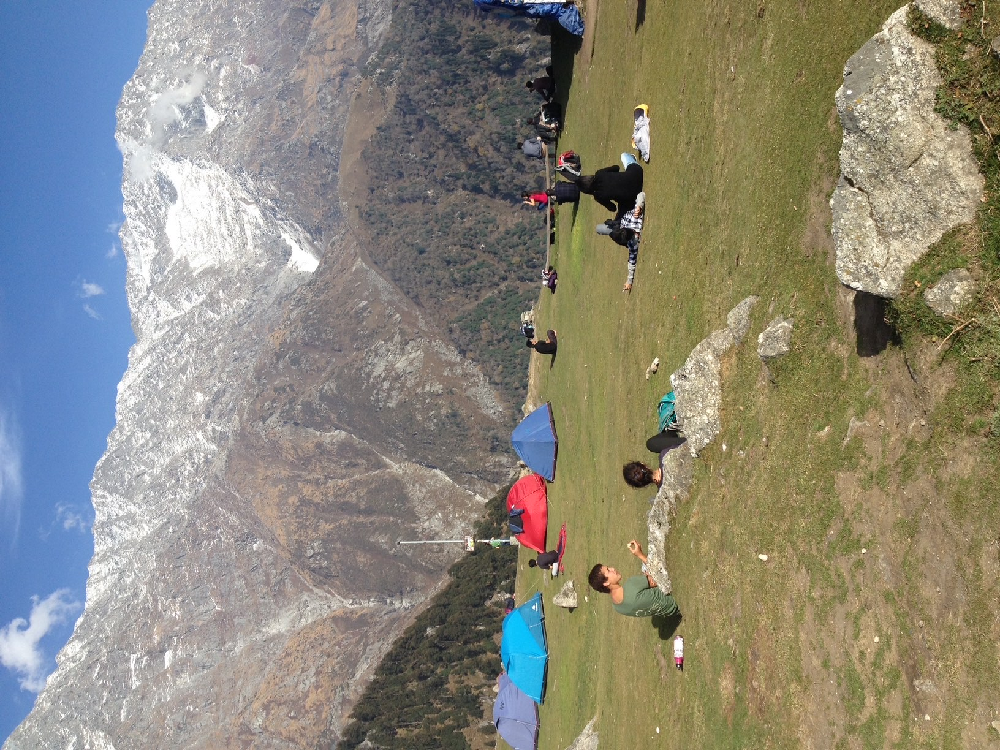

The world's highest rubbish dump
A Himalayan Anthropocene

Photo: Julia Perczel
About the Project
By tracing waste’s accumulation across landscapes and its interactions with other wastes, weather, geology, plant and animal life, gods and spirits, as well as economic and social processes, Julia Perczel’s research will contribute to the growing literature on the Himalayan Anthropocene.
The Himalayas are gaining notoriety as the world’s highest rubbish dump. This points to how increasing global and domestic circulation of commodities, labourers, and tourists directly impacts the landscape. Increased mobility of people and commodities, fed by expanding middle-class aspirations and consumption, has resulted in scaled geographies of blame and responsibility. Tourists often frame mounting waste as a problem caused by local people’s lack of care or knowledge. In contrast, locals frequently blame tourists for bringing commodities and leaving without taking their waste along. At the heart of the problem lies the entry of new materials into a social, environmental, and geological terrain with unique challenges for managing environmental consequences.
The introduction of the extended producer responsibility (EPR) legal framework attempts to force plastic producer companies to take responsibility for the proliferation of waste. The policy enacts the radical idea that producers should take responsibility for the after-effects of consumption. Yet, the practicalities for the logistics of processing and removal reveal the region’s inadequate connectivity and lack of appropriate logistics networks, markets, and infrastructures. In stark contrast to circulations that bring commodities to the hills, settling waste is understood as a sign of remoteness, though not remote enough to escape pollution.
Wastes without appropriate processing facilities or second-hand markets are burned or thrown down ravines, where they become entangled in ongoing geological processes, floods, and landslides. These are the features of an increasingly volatile landscape under climate change. Choking waterways gain significance due to floods and the region’s diminishing water supply due to melting glaciers. As a result, accumulating waste may exert its toxic influence in multiple ways in a landscape where unpredictable transformations are already underway. The indeterminacy necessitates attention to the more-than-human scale of wastes’ social and material relations as well as with the sacred landscapes of the Himalayas.
This ethnographic project explores the chemical, social, and political geographies of mounting waste in the Indian foothills of the Himalayas. Anthropological attention to how plastic comes to be a problem for different people and communities may help identify emerging publics in the changing political landscape of the environmental crisis.